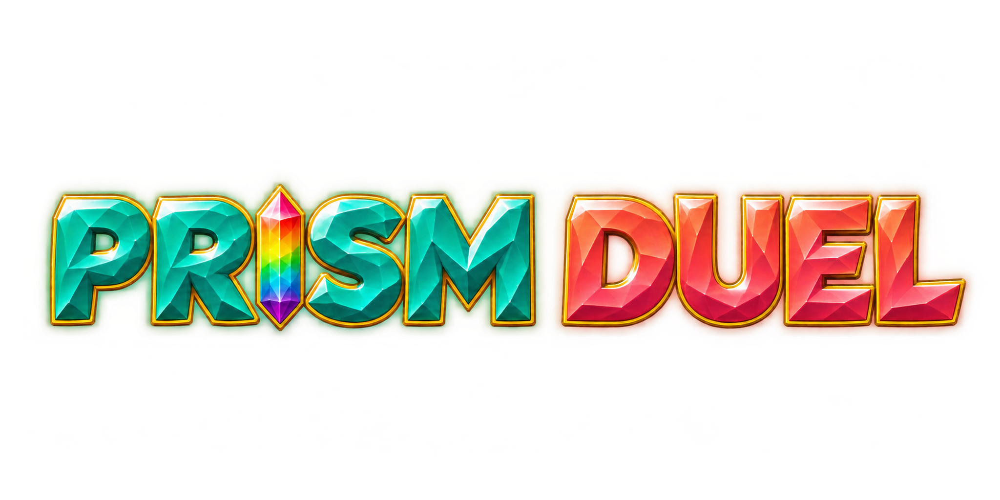
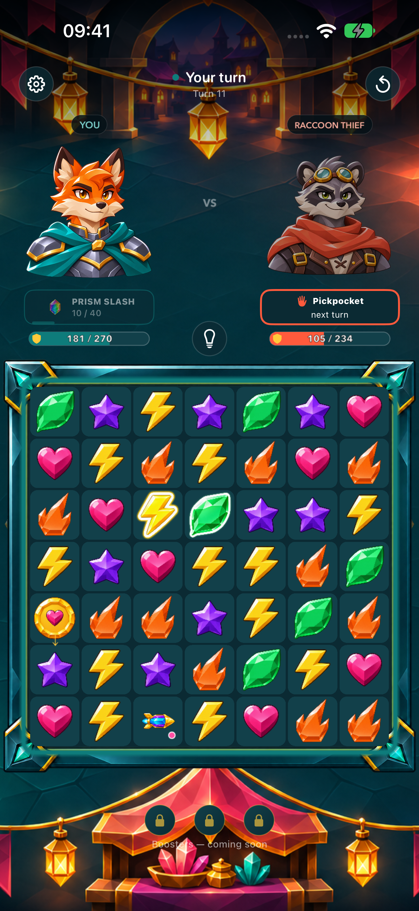

Your next move.
Their last chance.
Turn crystal matches into powerful attacks. Read your rival, build a cascade, and unleash Prism Slash across six vibrant worlds.
In development for iPhone & iPadOne board. Two rivals. Take turns, create specials and make every match count.
A world beyond every win. Meet six rivals, earn cosmetic rewards and chase your best Prism Rush score.
Play on your terms. No ads, no cross-app tracking. Optional game statistics and crash reports stay off until you say yes.
